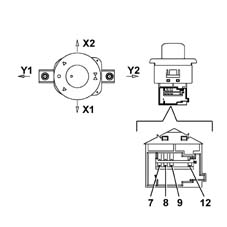

7005RA Check on operation of door mirror adjustment/folding
- Path
- Test > 70 BODY > 7005 passenger compartment front side doors > 7005R FRONT DOOR MIRRORS > 7005RA Check on operation of door mirror adjustment/folding
- Kind
- test / check procedure
- Applies to
- all engines; all production periods
- Interactive page
- https://sloeber94.github.io/elrnDB-lThss/en/#/213189
Applies to: all engines; all production periods
Mirror adjustment test LH/RH/UP/DOWN:
- Rimuovere la maniglia porta anteriore sx
- Rimuovere il joystick di regolazione/abbattimento specchi.
- Posizionare i puntali dell'ohmmetro tra i piedini 12 e 9 sul connettore del joystick e verificare la presenza dei seguenti valori resistivi sia per la selezione SX che DX dello specchio
 | Subject | Value |
|---|---|---|
X1 | Electric external rear view mirror | Ohm |
- | Left Movement X1 | 330±2%, |
| Subject | Value |
|---|---|---|
X2 | Electric external rear view mirror | Ohm |
- | Right Movement X2 | 750±2% |
| Subject | Value |
|---|---|---|
Y1 | Electric external rear view mirror | Ohm |
- | Forward Movement Y1 | 1500±2% |
| Subject | Value |
|---|---|---|
Y2 | Electric external rear view mirror | Ohm |
- | Backward Movement Y2 | 3000±2% |

LH and RH mirror selection and fold-down test:
Position the probes of an ohmmeter between pins 9 and 7 on the joystick connector and check for the following resistance values
| Subject | Value |
|---|---|---|
. | Electric external rear view mirror | Ohm |
- | Left Mirror Selection | 1000±2% |
- | Right Mirror Selection | 2200±2% |
- | Folding Selection | 430±2% |